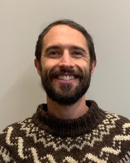

Postdoctoral researcher with RDML at Oregon State University's CoRIS institute
Bio-inspired & dynamic robot design and control
Biology is a rich source of inspiration for engineering design. My research analyzes animal locomotion and uses the insights for mobile robot design and control.
I earned my Ph.D. at the FAMU-FSU College of Engineering as a Dean's Doctoral Fellow, working in the STRIDe and CTML labs at Florida State University. Currently I use experiments and multiphysics simulation to optimize soft robot designs.
Originally from Cumberland, Maryland, a mountain town in what I affectionately call "West Virginia Maryland," I now live in Oregon with my wife and three kids. We like to ride bikes, climb rocks and go camping.
Research
Overview
Elongated swimmers and climbers such as lampreys get remarkable performance from simple bodies by exploiting flexibility, damping and interaction with their environment. My work models these effects, then tests them on physical robots, using optimization with the robot in the loop.
The common thread is dynamics: understanding how forces, friction and body mechanics combine to produce motion.
Current projects
BlueROV docking
Papers
Publications
Preprints
-
Model-based optimization of anguilliform swimming gaits for soft robotic applications
Van Stratum, B., Gallentine, J., Rucker, C., Barth, E., Clark, J. E., & Shoele, K. arXiv preprint 2606.11278 (2026).
Journal articles
-
Pacific lamprey inspired climbing
Van Stratum, B., Shoele, K., & Clark, J. E. Bioinspiration & Biomimetics 18(4), 046013 (2023).
-
Effect of internal damping on locomotion in frictional environments
Van Stratum, B., Clark, J., & Shoele, K. Physical Review E 107(5), 054406 (2023).
-
AquaClimber: a limbed swimming and climbing robot based on reduced order models
Austin, M., Chase, A., Van Stratum, B., & Clark, J. E. Bioinspiration & Biomimetics 18(1), 016004 (2022).
Conference papers
-
Comparative model evaluation with a symmetric three-link swimming robot
Van Stratum, B. J., Austin, M. P., Shoele, K., & Clark, J. E. IEEE/RSJ International Conference on Intelligent Robots and Systems (IROS) (2022).
Computational and experimental work using Nelder–Mead optimization to tune robot control with the robot in the loop.
-
A multimodal climbing-swimming soft robotic lamprey
Gallentine, J., Barth, E. J., Galloway, K., Van Stratum, B., Clark, J., & Shoele, K. ASME/Bath Symposium on Fluid Power and Motion Control, V001T01A040 (2022).
Projects
NASA BIG Idea Challenge: lunar quadruped
In summer 2022, NASA funded the STRIDe lab to design a quadruped robot for exploring the lunar surface. My team designed the foot. Nice work, Carlos, Cameron and Jake!
FAMU-FSU Engineering press release
NASA BIG Idea 2022 results and winning posters
Design of STARQ: A Multimodal Quadrupedal Robot for Running, Climbing, and Swimming (IEEE) [free PDF] (I led the foot design team)
Controls
Controls projects
Optimal control: trajectory optimization of a continuum robot arm
A piecewise-constant-curvature continuum arm, first without control or damping, then following an optimized trajectory.
Modern linear control: balancing a ball with a robot arm
A state-space controller keeps a ball balanced while the arm moves it through a descent. The full report derives the equations of motion.
Soltanov, Van Stratum & Vickers
Conference talks
Talks & abstracts
- 2023Using morphological intelligence in robotic designs of elongated swimmers. APS Division of Fluid Dynamics
- 2022Experimental and theoretical study of the roles of body flexibility in undulatory bio-inspired swimmers. APS Division of Fluid Dynamics
- 2021Optimization of a soft robot swimmer using Lighthill's large-amplitude elongated-body theory. APS Division of Fluid Dynamics
- 2021Reduced order model of lamprey-inspired wall climbing. Dynamic Walking. Abstract (PDF)
- 2021Modeling internal forces in limbless organisms during locomotion. Society for Integrative and Comparative Biology (SICB)
Recognition
Awards
- 2022Winner, Best Presentation, ME Graduate Student Poster Competition
- 2019FAMU-FSU Dean's Doctoral Fellow, 2019–2023
Contact
Get in touch
I'm always happy to talk about locomotion, robot design and control, or potential collaborations. Email: vanstrab@oregonstate.edu